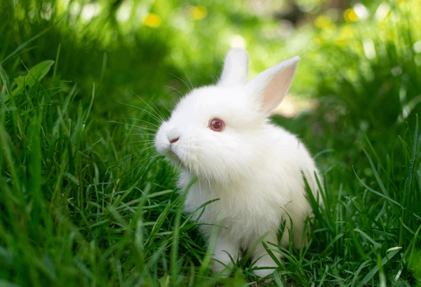
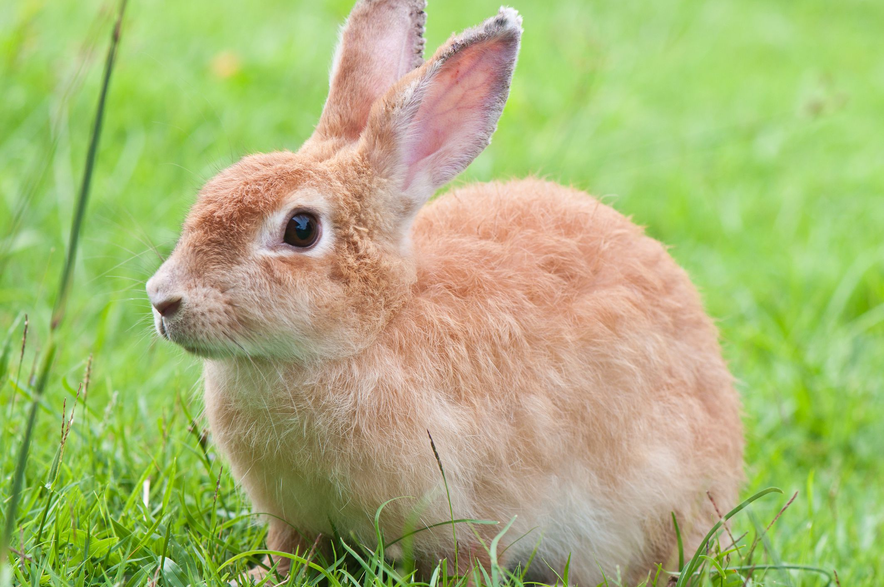

Rabbits are small mammals known for their long ears, soft fur, fluffy tails, and strong hind legs. They are herbivores and mainly eat grass, hay, vegetables, and leafy plants.
Wild rabbits can live in grasslands, forests, deserts, and other places where they can find food and shelter. Pet rabbits need a clean, safe, and comfortable home.
Rabbits need fresh water, plenty of hay, healthy food, exercise, and a clean environment. They should also receive proper veterinary care.